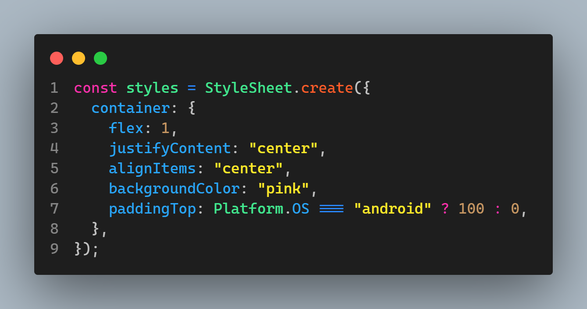
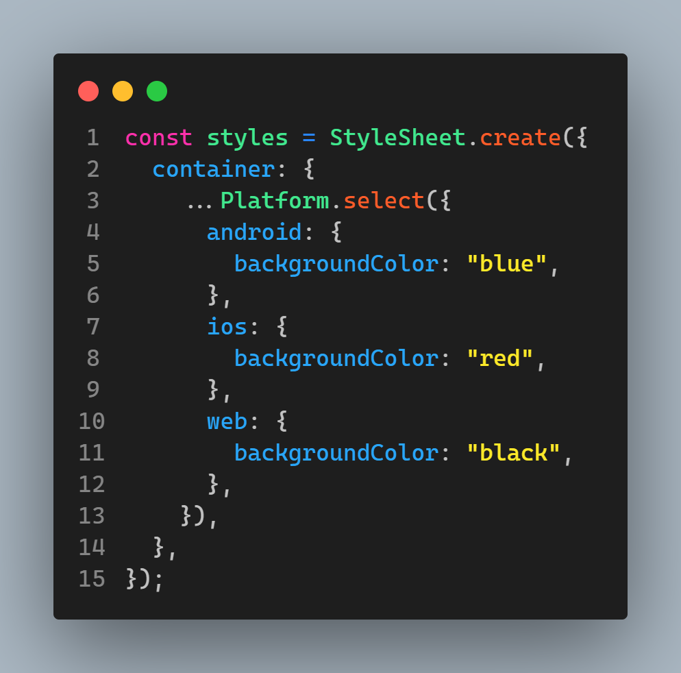
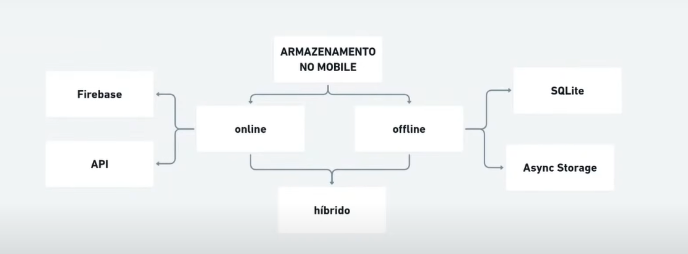
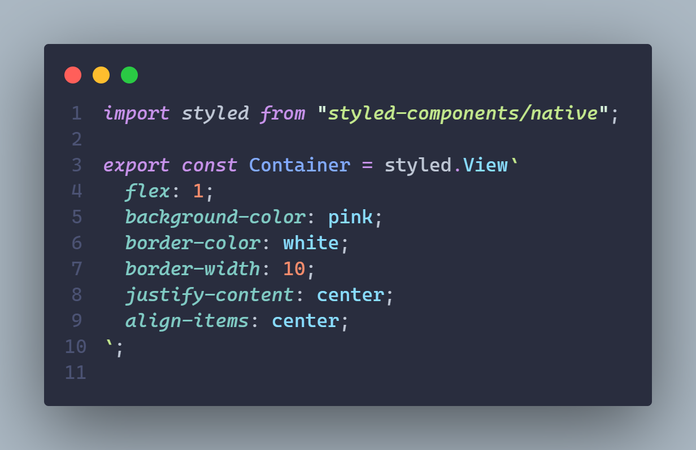
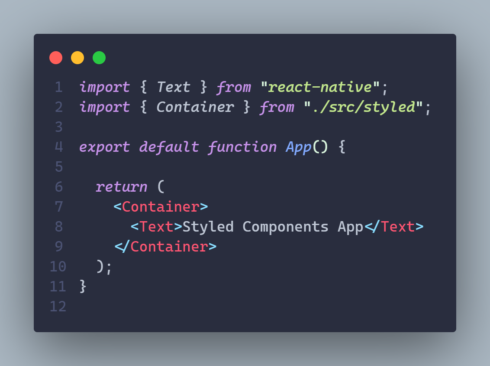
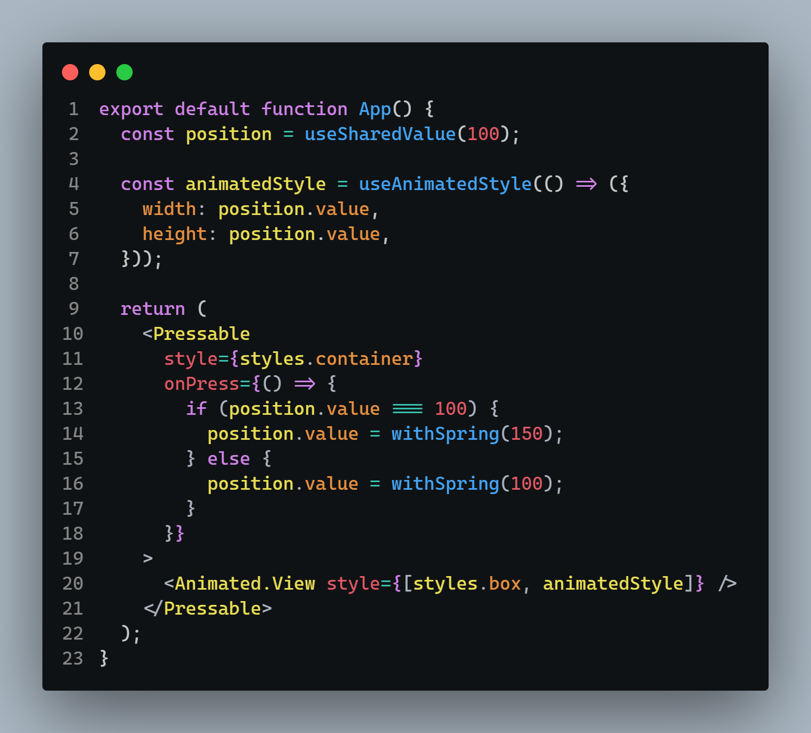

React Native
Sobre
É uma ferramente para programar apps Android ou IoS com javscript,
react.js.
Há muitos App que são criado com react Native. Facebook, instagram,
skype, pinterest, uber eats e outros
React Native CLI | Expo CLI
Há duas maneiras de criar Apps com react native. A primeira é com puro
React Native, a segundo é com Expo. Expo é um framework, um grupo de
ferramentas, que esconde um monte de complexidades de nós, que faz com
que seja muito mais rápido e fácil criar react native apps.
Está página tratará de Expo CLI
Instalação e Configuração
Ter instalado Node e NPM
Podemos utilizar Android Studio para Emular.
Ver Configurações Android Studio
No Terminal (para javascript): npx create-expo-app nomedoapp
No Terminal (para typescript):npx create-expo-app -t
expo-template-blank-typescript
cd nomedapp
npx expo start
No Celular, instalar o aplicato Expo, para poder rodar o nosso
aplicativo no celular
Extensões VS Code para ajudar: React Native Tools,
React-Native/React/Redux snippets.
Criar Projeto React-Native
No Terminal: npx create-expo-app
Podemos escolher entre Managed workflow e Bare workflow, ambos com
ou sem typescript.
Managed worflow -> Nós não veremos as pastas como IoS, Android,
veremos somente o javascript
Bare workflow -> Vai nos dar um projeto com apenas as mínimas
configurações para podermos utilizar o react native
Podemos iniciar com Managed workflow.
No Terminal, digitar npm start
Metro Bundler é uma ferramenta do React Native
Funções em ReactNative não retornam HTML como em React, elas retornam
Componentes especiais, que devem ser importados de "react-native"
Assim como react, react-native se baseia em componetes. Podemos
importar vários componentes de "react-native"
Componentes nativos React Native
Componentes Básicos
View
Funciona como uma div html comum.
Text
Imprime Textos
Propriedades:
onPress={function} -> Adiciona função ao pressionar
numberOfLines={number} -> Quantas linhas pode ocupar no máximo.
TextInput
É o meio que o usuário insere dados no app.
O valor sempre retornará uma string. Caso queiramos um números temos
que usar o parse.
PROPRIEDADES:
autocorrect={true/false} -> Corretor Automático
placholder="" -> placholder
value={this.state.value}
ScrollView
Na internet, qualquer conteúdo que seja maior que a tela
automaticamente gera um scroll.
Em Mobile não é assim, temos que usar ScrollView para criar um
scroll.
ScrollView renderiza tudo de uma vez, isso significa que se for uma
lista muito grande pode ter problemas de performance. Para isso
existe FlatList
FlatList
Serve para Listas
Caso qualquer prop seja atualizada, FlatList atualiza
automaticamente.
Tem que receber 3 propriedades:li>
data={} -> O que será imprimido, que variável, que array
keyExtractor={(item) => item.list} -> Indica qual será a key
render={({item}) => <View><Text>O que será
retornado</Text></View>}
SectionList
É como uma FlatList, só que cada item da lista é organizado em
secções
Propriedades:
sections={} => Recebe a variável, os dados
renerItem={} -> Recebe a função que imprimirá os itens
renderSectionHeader={} -> Função que retorna o cabeçalho da section
keyExtractor={} -> Recebe a key única de cada objeto, tem que ser
string
ActivityIndicator
É um indicador de Loading
Podemos apenas mudar a cor e o tamanho
Image
Imprime Imagens
source={require("path")} -> Propriedade para caminho da foto.
source={{uri: "URL", width: number, height: number}} -> Propriedade
para fotos por URL, deve conter tamanho.
blurRadius={number} -> Adiciona blur na imagem.
fadeDuration={number} -> Adiciona fade na imagem. O número é a
duração em ms.
loadingIndicatorSource={require("path")} -> Mostra isso enquanto a
imagem carrega.
ImageBackground
Funciona como um container que terá o fundo com aquela imagem
Coloca uma imagem como fundo, quenem em CSS
KeyboardAvoidingView
Faz com que o teclado empurre o conteúdo da tela para cima, sem
cobrir a tela.
Funciona somente em Android
Muito útil com inputs
Este funciona como um container, deve envolver tudo que queremos que
não seja tampado, necessita receber a propriedade behavior='padding'
ou outra tipo.
Modal
É um Modal simples, não muito usado.
RefreshControl
Usado dentro de uma ScrollView ou Listas.
É o refresh de quando se arrasta a tela pra baixo
Coloca-se como parâmetro da list refreshControl={<RefreshControl/>}
O RefreshControl tem que receber 2 propriedades
refreshing={} -> Recebe um state boolean. Enquanto for true ele mostrará o feedback do refresh
onRefresh={boolean_state} -> Recebe uma função, que é o que fará quando atualizar
SafeAreaView
Igual View, porém caso esteja em uma area da tela que não de para
ver o conteúdo, ele reorganiza o conteúdo.
StatusBar
Controla a barra de status do celular no aplicativo
Propriedades:
barStyle="dark-content" -> Define estilo
backgroundColor="#F0F0F0" -> Define Cor (Somente Android)
Switch
É um simples interruptor boolean
PROPRIEDADES:
Usa-se um useState para pegar o valor.
value={state} onValueChange={setState}
Touchables
Transforma qualquer coisa em clicável quando envolvido com tags
Touchables, através do evento onPress
TouchableHighlight -> Ao pressionar mostra efeito de escurecer por
alguns ms.
TouchableOpacity -> Ao pressionar mostra efeito de reduzir
opacidade. Propriedades: "activeOpacity={number}" define o tanto de
opacidade que muda
TouchableWithouFeedback -> Podemos adicionar função, porém não tem
nenhum efeito.
TouchableNativeFeedback -> Ao pressionar mostra efeito de onda.
(Android apenas)
Pressable
É como um botão pressionável.
Button
Adiciona um botão na tela
title="" -> Texto do botão.
onPress={() => {}} -> Adiciona evento
Alert (ioS)
Alert é uma API, é um objeto.
alert("") funciona igual no javascript, que é diferente da API
Alert.
Alert.alert("Título", "Mensagem", [{textoBotao: "yes", onPress={()
=> {}}}, {textoBotao2: "no", onPress={() => {}}}])
Alert.prompt("Título", "Mensagem", (inserir) => {})
Não é muito utilizado pois é muito pouco personalizável
VirtualizedList
Provavelmente nunca será utilizado, mas serve como componente base
para FlatLists e SectionList
DrawerLayoutAndroid
É aquela telinha que aparece ao puxar para o lado
InputAcessoryView
Coloca uma View em cima do teclado
Somente para IoS
Componentes externos
Podemos também baixar componentes externos. Por exemplo um slider.
Há uma biblioteca de componentes externos no site docs.expo.dev
Temos que pegar o comando para instalar o componente e instalar no
terminal
Então temos que importá-lo
Navigation
Podemos encontrar e baixar componentes que servem para criar
diversas telas.
Site: reactnavigation.org
Plataform Specific Code
React Native serve tanto para Android como para IoS, porém algumas linhas servem para apenas alguma das palataformas, então podemos detectar qual plataforma o usuário utiliza
import { Plataform } from "react-native";
Plataform.OS -> Retorna o sistema operacional. ('ios' | 'android' | 'windows' | 'macos' | 'web')
Podemos colocar estilos específicos para um das plataformas utilizando Plataform.OS
Podemos fazer o mesmo com Styled Components, porém temos que colocar o código inteiro entre ${}

Há outro jeito de fazer também.
Nos styles podemos digitar ...Platform.select({ ios: { . }, android: { . } }) para colocarmos styles para várias plataformas

Podemos também criar componentes separados em que apenas um deles será utilizado dependendo do OS
Temos que criar dois componentes na pasta componentes e o nome dos arquivos tem que ser o mesmo, porém mudando o nome do sistema operacional
ButtonComponent.android.tsx
ButtonComponent.ios.tsx
Basta importar o componente sem colocar o nome 'ios.tsx' ou 'androis.tsx' e o React Native identifica qual utilizar automaticamente..
Stylesheets
Os styles em react-native são passados como puro javascript. Podemos
passar um inline style ou como uma variável assim: const styles =
StyleSheet.create({styles})
Armazenamento React Native
Estratégias de Armazenamento:

Async Storage
Considerações Gerais
Async storage não é um banco criptografado, então é importante utilizar algum jeito de criptografar caso seja algum tipo de senha ou inforamação delicada
É um banco de dados não relacional.
Não é bom para dados com estruturas complexas ou dados que tem relação entre si.
Armazena no formato de uma string, por isso tem uma ótima performance.
Funciona muito similar ao localStorage do navegador, recebendo 2 parâmetros, um sendo a chave e o outro uma string JSON, e utiliza setItem() e getItem()
Async Storage é assíncrono, apesar de muito rápido exige um tempo para salvar. Podemos colocá-lo dentro de uma funçã async e utilizar ele com await.
Sugestão: É interessante fazer as chaves de modo a se identificar que é o seu aplicativo que utiliza ela. Exemplo de chave: "@nome_do_app:tipo_de_informação" -> "@savepass:passwords/li>
Utilização de Async Storage
No Terminal: npx expo install @react-native-async-storage/async-storage
import AsyncStorage from "@react-native-async-storage/async-storage";
AsyncStorage.setItem("chave", JSON.strinify(dados))
AsyncStorage.getItem("chave")
AsyncStorage.getAllKeys() -> Retorna todas as keys salvas no celular de todos os apps.
Firebase
Sobre
Firebase é uma plataforma de BaaS da google que oferece serviços onlie para desenvolvedores.
O Site do Firebase é: firebase.google.com
Firebase Realtime Database -> Armazena dados em tempo real, sincronizando entre clientes.
Firestore -> Banco de dados NoSQL com consultas avançadas e escalabilidade.
Firebase Authentication -> Simplifica autenticação com métodos como e-mail/senha e autenticação social.
Firebase Cloud Messaging -> Envia notificações push para dispositivos móveis.
Firebase Cloud Functions -> Cria funções na nuvem em resposta a eventos.
Firebase Hosting -> Hospeda conteúdo estático e web para aplicativos.
Firebase Storage -> Armazena e serve arquivos, como imagens e vídeos.
Firebase Performance Monitoring e Analytics -> Monitora desempenho e coleta dados analíticos.
Firebase Remote Config -> Modifica aparência e comportamento do aplicativo em tempo real.
Firebase Test Lab -> Executa testes em dispositivos reais para garantir qualidade.
In
stalação
Criar um projeto
Criar um Projeto no console do firebase.google.com
Instalação
Criar um projeto
Criar um Projeto no console do firebase.google.com
Acessibilidade
A Acessibilidade é importante para pessoas que utilizam celular e tem algum tipo de deficiencia
No Android, o app de acessibilidade é o Talkback, em iOS é o VoiceOver
Para tornar algo acessível para o leitor, basta colocar a propriedade accessible, ou accessibility={true}, então o aplicativo consegue selecionar este componente.
Caso coloquemos como accessible o componente pai, não conseguimos acessar o componente filho.
Inputs são accessíveis normalmente já, porém podemos passar o que será lido pelo leitor através do placeholder
Podemos passar variáveis para os textos passando com {`${variável}`}
O aplicativo "accessibility scanner da app store serve para scanear nosso aplicativo e nos sugerir as mudanças que podemos fazer para melhorar a accessibilidade, como melhoria de contraste e adicionar novas informações
accessible -> Torna componente acessível
accessibilityLabel="" -> É o que o leitor lerá.
placeholder="" -> É lido como um accessibilityLabel pelo leitor
accessiblityHint="" -> Coloca-se em botoões e clicáveis para dizer o que acontece ao interagir com o cponente
accessibilityState="" -> Diz para o usuário o estado atual da aplicação.
accessiblityValue="" -> Diz para o usuário o valor atual do componente. É como o accessibilityLabel, porém dinâmico, como em states.
accessibilityActions={[{name: 'activate', label: 'Ver detalhes do jogo'}]} -> Serve quando um componente tem mais de uma função ao ser clicado, então passamos um array com todas as ações possíveis. Activate = clique normal, label = o que será lido. É necessário o evento "onAccessibilityAction" para coletar os dados de qual foi a ação do usuário
Styled Components
O que é
Styled components é uma lib react, react-native que serve para
estilizar componentes da mesma forma que é feito em css, porém com
javascript, permitindo a reutilização de conhecimenos.
Esta lib é uma forma alternativa à o StyleSheet nativo do react
native.
Instalação:
No terminal: npm install styled-components
Baixar Extensão vscode-styled-components
No src criar um arquivo chamado styled.js
importar: import styled from "styled-components/native"
Funcionamento
Os styles são declarados como variáveis const que recebe o nome do
componente que queremos e será exportada.
Essa const recebe a palavra styled.nome do componente, seguido de
crase e terminada em ponto e vírgula. O código será escrito entre as
Crases e será idêntico a CSS.
Basta importar este componente no arquivo que iremos utilizar, e
usá-lo como se fosse um componente.
styled.js:

App.tsx:

React Native animations
Lib: Reanimated serve para animações react native
No terminal: npx expo install react-native-reanimated
Adicionar plugin babel: plugins: ['react-native-reanimated/plugin']
b import Animated from "react-native-reanimtaed"
Efeitos
Animated.View é uma view animada
A propriedade entering recebe um efeito de entrada, e exiting de saída
Propriedades Prontas
Propriedades In são de entrada, e Out são de saída, basta trocar o in por out.
FadeIn
BounceIn
ZoomIn
RoolIn
SlideIn
StretchIn
RotateIn
FlipInEasy
Essas propriedades possuem algumas propriedades também
.duration(ms)
.delay(ms)
Efeitos ao clique
useSharedValue
useSharedValue é um hook do reanimanted que define um valor para um estilo e esse estilo pode ser variável. Para acessar o valor usa-se o nome da variável declarada .value
useAnimatedStyle
useAnimatedStyle é um hook do reanimated para definir um estilo variável animado em uma Animated.View. Recebe uma callback function. O nome da variável deve ser colocado dentro do style do componente. Usa-se junto com o useSharedValue
Propriedades de efeito
withTiming(number)
withSpring(number)

Interfaces Modernas
Para ter Interfaces modernas tem algumas características muito úteis de se saber
Criar no src uma pasta theme, que possue um arquivo index.ts. Dentro deste arquivo vai ter um export default de um objeto com que possui as cores e fontes usadas como base em todo o projeto.
Site Adobe Color Wheel nos gera paletas de cores que combinam e pegar paleta de cores de uma imagem.
Não utilizar a fonte padrão do dispositivo. Cada OS tem uma diferente.
Aprender o básico de circulo de cores e combinações
Aprender o básico de tipografia. O que cada tipo de fonte transmite. Cores impactam com sentimentos.
Site Google Fonts tem muitas fontes
Micro Interações
Micro Interações e Gesture Handler são detalhes funcionais e interativos de um produto. Tem um papel funcional no App.
Tipos de Microinteraçõces:
Sonora
Visual
Tátil -> Gestos, toques, pinçar.
Gestos
Clique Simples
Clique Duplo
Clique Longo
Arrastar
Pinçar
Rotação
Arrastar com 2 dedos
React Native Gesture Handler
É a bibiloteca para manejar os diferentes tipos de toques do usuário
npx expo install react-native-gesture-handler
npx expo install react-reanimated
Libs Úteis React Native
uuid
É uma lib que serve para gerar ids automaticamente.
npm install react-native-uuid
Toast
Serve para gerar toasts. Utilizando Toast.show({type: "aa"})
npm install react-native-toast-message
React Context
Serve para compartilhar variáveis de estado global na aplicação. Útil para informações de autenticação e informações que precisam ser utilizadas no app inteiro.
Installations:
npm install styled-components
npm install @types/styled-components-react-native - D
npm install react-native-toast-message
npm install react-native-uuid
npm install @react-navigation/native
npm install @react-navigation/stack
npm install @react-navigation/bottom-tabs
npx expo install expo-app-loading
npx expo install expo-font @expo-google-fonts/inter
npx expo install react-native-screens react-native-safe-area-context
npx expo install @react-native-async-storage/async-storage
npx expo install react-native-gesture-handler
npx expo install react-native-reanimated
npx expo install react-native-animatable
npx expo install react-native-gesture-handler
npx expo install react-native-web@~0.19.6 @expo/webpack-config@^19.0.0
Native Base com gluestack-ui
Native Base é uma biblioteca de componentes de React Native. Native
base Possui diversos componentes pré-prontos e altamente
personalizáveis.
Intalação
Components Native-Base
Layout
Box
Serve como um contaainer flexível, como uma
Center
Alinha tudo Horizontalmente e Verticalmente no centro.
HStack
Serve para alinhar os elementos filhos horizontalmente
Serve como se fosse um flex-direction: row.
VStack
Serve para alinhar os elementos filhos verticalmente
Serve como se fosse um flex-direction: column.
Divider
Divider serve igual uma div, porém coloca uma linha como se fosse um
hr do html no topo, dividindo o conteúdo
Tipografia
Text
Maneira de imprimir textos na tela
Heading
Fonte um pouco maior e em negrito
Formulários
FormControl
Serve como
Button
Adiciona um Botão
ButtonText -> Adiciona Texto ao botão
Checkbox